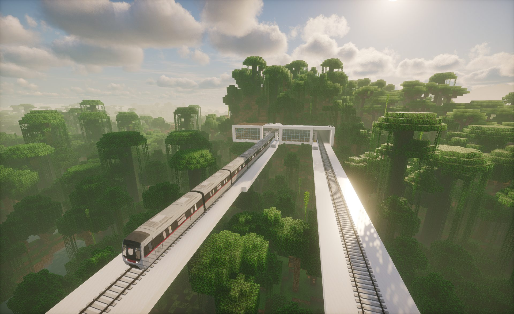
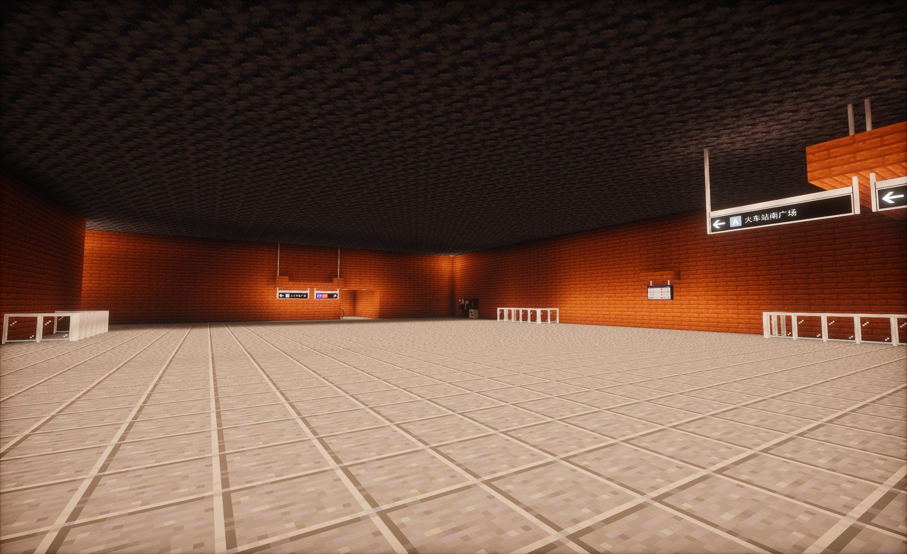
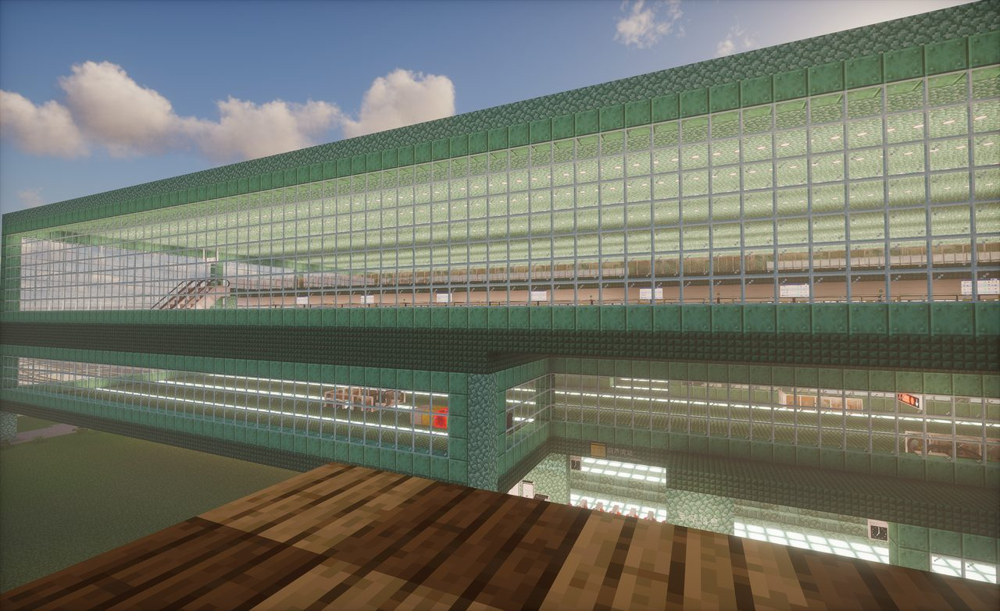

Minecraft Transit Railway 打造逼真的轨道交通系统

金尚市地铁站厅实景
Minecraft Transit Railway（简称 MTR）是一款致力于在《我的世界》中重现真实轨道交通体验的模组。通过它，玩家不仅可以建造铁路线路，更能实现自动化运行的地铁、城际列车与轻轨系统。列车可根据设定自动进站、发车，并支持显示屏、广播、时刻表、信号系统等多种真实元素，让城市交通在方块世界中焕发生机。
在金尚市，这一模组被充分运用到极致。我们的服务器以 MTR 为核心，构建了一个庞大、复杂、且不断扩展的轨道交通网络。这里的每一条线路、每一个车站、每一辆列车都由玩家亲手设计、精心打造。
无论是繁忙的市中心地铁、宁静的郊区支线，还是穿越高架的观光线路，玩家都能感受到接近现实都市的出行体验。
在金尚市，地铁不仅是一种交通方式，更是一种艺术与工程的结合。这里汇聚了热爱建筑、城市规划与交通系统的玩家，共同打造一个充满未来感与秩序之美的虚拟都市轨道世界。
模拟真实地铁系统的运行逻辑
多条线路覆盖整个游戏世界
玩家共同参与扩展铁路网络
红石与命令方块的完美结合
实时查询服务器运行状态和在线玩家，每分钟自动刷新

在线玩家
--/--
游戏版本
1.20.1 Forge
三步上车，开启你的轨交之旅
服务器地址
kr-nc-bgp-1.ofalias.net:21468
启动游戏，进入「多人游戏」→「添加服务器」，粘贴左侧的服务器地址
进入服务器，开始探索与建设金尚市
请遵守服务器规则，爱护公共设施，共同维护轨道交通网络的秩序和发展
加入社群，交流建设心得；发现问题，及时汇报
请遵守规则，禁止出现辱骂他人现象，共同维护网络秩序